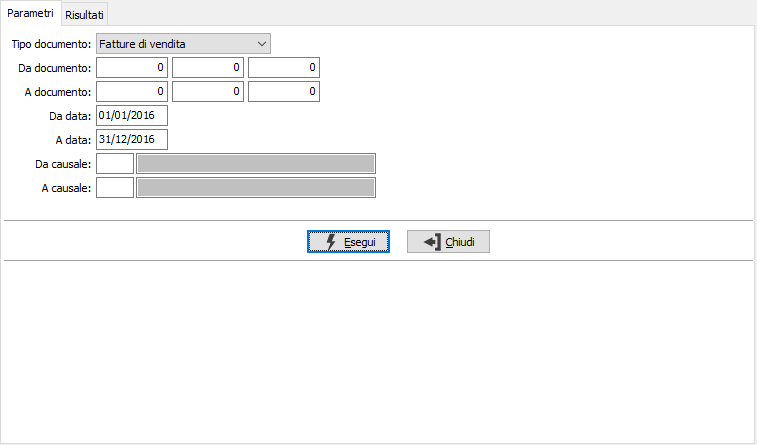
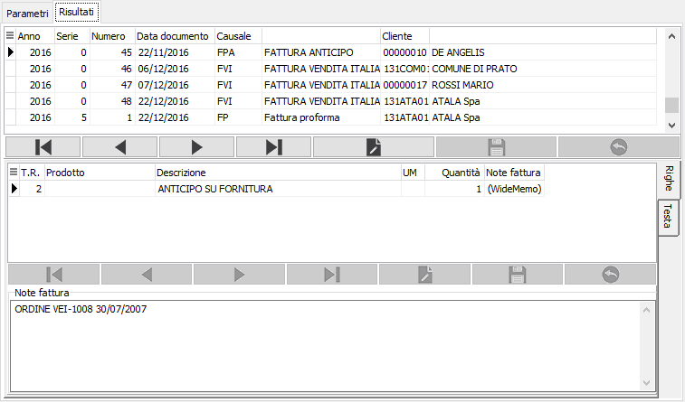

Manutenzione dati descrittivi documenti
Il programma consente di agire sui soli campi descrittivi (descrizione, note di rigo e note di testa) di tutti i tipi documento presenti in OS1, senza necessità di procedere ad annullare le operazioni definitive applicate ai documenti.
La finestra si compone di due sezioni, la prima consente l'inserimento dei parametri di selezione, la seconda permette la gestione dei dati selezionati.

è necessario indicare il tipo di documento, gli altri parametri sono opzionali; premendo il pulsante Esegui si dà inizio all'elaborazione che porta alla seconda sezione 'Risultati' da cui effettuare la vera e propria modifica.

Selezionando nella griglia in alto il documento e premendo il tasto modifica sul navigatore sottostante;nella griglia centrale si seleziona il rigo, nella griglia in basso si possono modificare le note del rigo ed agendo sulle linguette laterali modificare anche le eventuali note di testata.
Al termine delle operazioni premendo il tasto F10 oppure il bottone Salva sulla tool saranno rese effettive le modifiche ed aggiornati i documenti.